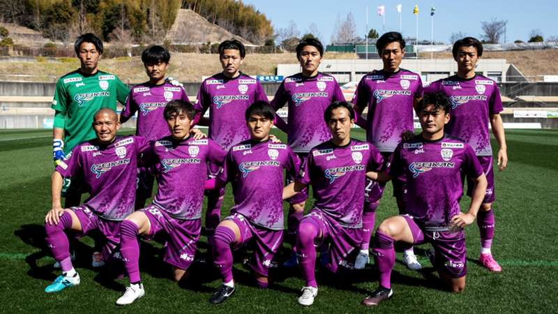
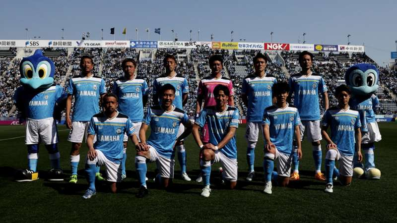

藤枝MYFC
- 創立年 2009年
- ホームタウン 藤枝総合運動公園
- 所属カテゴリー 明治安田J2リーグ
主な沿革
- 2009年 静岡県1部リーグ スタート
- 2011年 東海1部リーグ優勝 地域決勝大会(JFL昇格戦)2位 JFL昇格
- 2013年 Jリーグ準加盟 Jリーグ昇格
- 2014年 J3リーグ11位
- 2022年 J3リーグ2位 J2昇格
- 2023年 J2リーグ12位

清水エスパルス
- 創立年 1991年
- ホームタウン IAIスタジアム
- 所属カテゴリー 明治安田J2リーグ
主な沿革
- 1991年 清水FCとしてJリーグ加盟承認
- 1992年 清水エスパルスとして始動
- 1996年 チーム結成5年目で初タイトル獲得
- 2002年 日韓w杯開幕 ゼロックススーパーカップ大会2連覇
- 2015年 創部初J2に降格
- 2016年 J1に復帰
- 2017年 クラブ創設25周年
- 2022年 クラブ創設30周年の年にJ2降格
- 2022~2024年 J2でJ1を目指し戦っている。

ジュビロ磐田
- 創立年 1972年
- ホームタウン ヤマハスタジアム
- 所属カテゴリー 明治安田J1リーグ
主な沿革
- 1972年 ヤマハ発動機のサッカー部として創設
- 1993年 jリーグの準会員となり、チーム名をジュビロ磐田に改称
- 1997年 初タイトル獲得 Jリーグ年間王者
- 2002年 日韓w杯開幕 初の両ステージ制覇
- 2013年 創部初J2に降格
- 2015年 J1に復帰
- 2019年 4年j1で戦うも2度目のj2降格
- 2022年 清水エスパルスとともにJ2降格→静岡県のサッカーチームがj1から姿を消す...
- 2024年 j1に昇格しJ1で残留を目指し戦っている。
